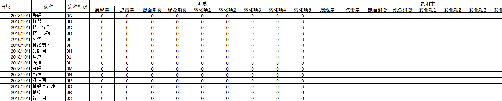
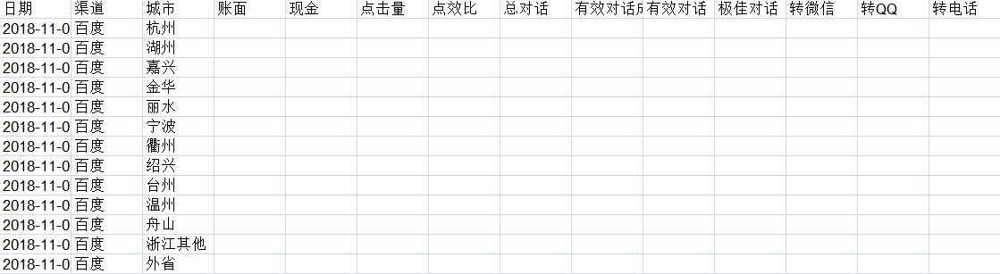

<nz-steps [(nzCurrent)]="currentStep" [nzSize]="'small'">
  <nz-step nzTitle="基本设置"></nz-step>
  <nz-step nzTitle="选择数据项"></nz-step>
  <nz-step nzTitle="条件设置"></nz-step>
</nz-steps>
<div class="steps-content">
  <div *ngIf="currentStep===0">
    <div class="text-center mt30">
      <label>&nbsp;&nbsp;&nbsp;类型:</label>
      <nz-select class="w150 ml8" [nzSize]="'small'" [(ngModel)]="reportTableData.report_type" (ngModelChange)="refreshSummaryType($event)">
        <!--<nz-option [nzLabel]="'基础报告'" [nzValue]="'basic_report'"></nz-option>-->
        <!--<nz-option [nzLabel]="'地域报告'" [nzValue]="'region_report'"></nz-option>-->
        <!--<nz-option [nzLabel]="'时段报告'" [nzValue]="'hours_report'"></nz-option>-->
        <!--<nz-option [nzLabel]="'维度报告'" [nzValue]="'dim_report'"></nz-option>-->
        <!--<nz-option [nzLabel]="'病种效果报告'" [nzValue]="'biz_unit_report'"></nz-option>-->
        <!--<nz-option [nzLabel]="'病种小时报告'" [nzValue]="'biz_unit_hours_report'"></nz-option>-->
        <!--<nz-option [nzLabel]="'病种地域报告'" [nzValue]="'biz_unit_region_report'"></nz-option>-->
        <nz-option *ngFor="let option of reportTypeList" [nzLabel]="option.name" [nzValue]="option.value"></nz-option>
      </nz-select>
    </div>
    <div class="text-center mt20" *ngIf="reportTableData.report_type!=='dim_report' && reportTableData.report_type!=='target_report'">
      <label>&nbsp;&nbsp;&nbsp;粒度:</label>
      <nz-select class="w150 ml8" [nzSize]="'small'" [(ngModel)]="reportTableData.summary_type" (ngModelChange)="summaryTypeChange($event)">
        <ng-container *ngFor="let item of summaryTypes">
          <nz-option [nzLabel]="item['name']" [nzValue]="item['key']"></nz-option>
        </ng-container>
      </nz-select>
    </div>
    <div
      *ngIf="reportTableData.report_type==='target_report'">
      <div  class="text-center mt20" >
        <label>&nbsp;&nbsp;&nbsp;粒度:</label>
        <nz-select  class="w150 ml8" [nzSize]="'small'" nzPlaceHolder="请选择定向粒度" [(ngModel)]="targetSummaryTypeId" [nzSize]="'small'"
          (ngModelChange)="onPubliserChange()">
          <nz-option [nzLabel]="targetSummary.name" [nzValue]="targetSummary.key" *ngFor="let targetSummary of targetSummaryTypeList">
            <ng-container *ngFor="let targetSummary of targetSummaryTypeList">
              <nz-option [nzLabel]="targetSummary.name" [nzValue]="targetSummary.key" *ngIf="targetSummary.includePublisherIds.includes(menuService.currentPublisherId)" ></nz-option>
            </ng-container>
          </nz-option>
        </nz-select>
      </div>
      <div  class="text-center mt20" >
        <label>&nbsp;&nbsp;&nbsp;指标:</label>
        <nz-select  class="w150 ml8" [nzSize]="'small'" nzPlaceHolder="请选择定向类型" [(ngModel)]="reportTableData['target_type']"
          [nzSize]="'small'" (ngModelChange)="onTargetChange()">
          <ng-container *ngFor="let target of targetTypeList">
            <nz-option [nzLabel]="target.name" [nzValue]="target.key" *ngIf="target.includePublisherIds.includes(menuService.currentPublisherId) && target.includeSummaryNames['publisher_'+menuService.currentPublisherId].includes(targetSummaryTypeId)">
            </nz-option>
          </ng-container>
        </nz-select>
      </div>

    </div>


    <div class="mb30"></div>
    <div class="button-controller">
      <button class="ml8" nz-button [nzType]="'default'" [nzSize]="'small'" (click)="cancelModal()">
        <span>取消</span>
      </button>
      <button class="ml8" nz-button [nzType]="'primary'" [nzSize]="'small'" (click)="goNext()">
        <span>下一步</span>
      </button>
    </div>
  </div>
  <ng-container *ngIf="currentStep===1">
    <div class="setting-item-container mt20 mb20">
      <div class="select-container">
          <div class="item-title">数据分类</div>
          <div class="item-body">
            <ul class="item-define mr8">
              <li class="pl8 hand" *ngFor="let item of dataItemAttrs; let index = index;" [class.active]="index===selectItemIndex" (click)="changeSelectIndex(index)">
                <span>{{item.name}}
                  <ng-template #rankTemplate><p class="w220">刷排名提示：百度和神马使用的是访问URL，搜狗使用的是显示URL，360因媒体不返回URL字段所以为空</p></ng-template>
                  <i nz-icon nzType="question-circle" nzTheme="outline"
                    *ngIf="item.key==='real_ranking'"
                    nz-popover
                    [nzPopoverContent]="rankTemplate"
                     nzPopoverPlacement="right"
                    class="ml8"
                    style="color: #f09200"></i>
                </span>
              </li>
            </ul>
            <ul class="item-option pl8 pr8">
              <ng-container *ngIf="dataItemAttrs[selectItemIndex]['type']=='basic'">
              <li>
                <div>数据项</div>
                <div class="select-area-menu">
                  <label nz-checkbox [(ngModel)]="dataItemAttrs[selectItemIndex]['allSelected']['current']" (ngModelChange)="changeSelectedItems('current')" [nzDisabled]="(dataItemAttrs[selectItemIndex]['lockSelectCount'] === dataItemAttrs[selectItemIndex]['data'].length) || (dataItemAttrs[selectItemIndex]['key']==='pub_lock_data'&&dataItemAttrs[selectItemIndex]['allSelected']['current'])" [nzIndeterminate]="dataItemAttrs[selectItemIndex]['selectIndexNum']['current']>0 && dataItemAttrs[selectItemIndex]['selectIndexNum']['current']!=dataItemAttrs[selectItemIndex]['allIndexNum']['current'] "></label>
                </div>
              </li>
              </ng-container>
              <ng-container *ngIf="dataItemAttrs[selectItemIndex]['type']=='compare' && dataItemAttrs[selectItemIndex]['is_compare'] == true">
              <li>
                <div>
                  <span>数据项</span>
                  <i nz-icon nzType="question-circle" nzTheme="outline" nz-tooltip [nzTooltipTitle]="'符号分别为：实际值，#对比值，△变化值，%变化率,率和成本类指标不支持计算a日均和p占比'" [nzTooltipPlacement]="'topLeft'" class="ml8" style="color: #f09200"></i>
                </div>
                <div class="select-area-menu">
                  <label nz-checkbox [(ngModel)]="dataItemAttrs[selectItemIndex]['allSelected']['current']" (ngModelChange)="changeSelectedItems('current')" [nzIndeterminate]="dataItemAttrs[selectItemIndex]['selectIndexNum']['current']>0 && dataItemAttrs[selectItemIndex]['selectIndexNum']['current']!=dataItemAttrs[selectItemIndex]['allIndexNum']['current'] "></label>
                  <div class="select-menu-toolip">#</div>
                  <label nz-checkbox [(ngModel)]="dataItemAttrs[selectItemIndex]['allSelected']['compare']" (ngModelChange)="changeSelectedItems('compare')" [nzIndeterminate]="dataItemAttrs[selectItemIndex]['selectIndexNum']['compare']>0 && dataItemAttrs[selectItemIndex]['selectIndexNum']['compare']!=dataItemAttrs[selectItemIndex]['allIndexNum']['compare'] "></label>
                  <div class="select-menu-toolip">△</div>
                  <label nz-checkbox [(ngModel)]="dataItemAttrs[selectItemIndex]['allSelected']['compare_abs']" (ngModelChange)="changeSelectedItems('compare_abs')" [nzIndeterminate]="dataItemAttrs[selectItemIndex]['selectIndexNum']['compare_abs']>0 && dataItemAttrs[selectItemIndex]['selectIndexNum']['compare_abs']!=dataItemAttrs[selectItemIndex]['allIndexNum']['compare_abs'] "></label>
                  <div class="select-menu-toolip">%</div>
                  <label nz-checkbox [(ngModel)]="dataItemAttrs[selectItemIndex]['allSelected']['compare_rate']" (ngModelChange)="changeSelectedItems('compare_rate')" [nzIndeterminate]="dataItemAttrs[selectItemIndex]['selectIndexNum']['compare_rate']>0 && dataItemAttrs[selectItemIndex]['selectIndexNum']['compare_rate']!=dataItemAttrs[selectItemIndex]['allIndexNum']['compare_rate'] "></label>
                </div>
              </li>
              </ng-container>
              <ng-container *ngIf="dataItemAttrs[selectItemIndex]['type']=='compare' && dataItemAttrs[selectItemIndex]['is_compare'] == false">
                <li>
                  <div>
                    <span>数据项</span>
                  </div>
                  <div class="select-area-menu">
                    <label nz-checkbox [(ngModel)]="dataItemAttrs[selectItemIndex]['allSelected']['current']" (ngModelChange)="changeSelectedItems('current')" [nzIndeterminate]="dataItemAttrs[selectItemIndex]['selectIndexNum']['current']>0 && dataItemAttrs[selectItemIndex]['selectIndexNum']['current']!=dataItemAttrs[selectItemIndex]['allIndexNum']['current'] "></label>
                  </div>
                </li>
              </ng-container>
              <ng-container *ngIf="dataItemAttrs[selectItemIndex]['type']=='basic'">
                <li *ngFor="let item of dataItemAttrs[selectItemIndex]['data'];let index=index">
                  <div>{{item.name}}</div>
                  <div class="select-area-menu">
                    <label nz-checkbox [(ngModel)]="item.selected.current"
                           [nzDisabled]="(item['locking'] && item['locking'].indexOf(reportTableData.summary_type) !== -1) || (item['has_least'] && dataItemAttrs[selectItemIndex]['leastSelectCount'] === 1 && item.selected.current)"
                           (ngModelChange)="changeSelectedItem(item,index,'current')"></label>
                  </div>
                </li>
              </ng-container>
              <ng-container *ngIf="dataItemAttrs[selectItemIndex]['type']=='compare' && dataItemAttrs[selectItemIndex]['is_compare'] == true">
              <li *ngFor="let item of dataItemAttrs[selectItemIndex]['data'];let index = index">
                <div>{{item.name}}</div>
                <div class="select-area-menu">
                  <label nz-checkbox [(ngModel)]="item.selected.current"  (ngModelChange)="changeSelectedItem(item,index,'current')"></label>
                  <div class="select-menu-toolip"></div>
                  <label nz-checkbox [(ngModel)]="item.selected.compare"  (ngModelChange)="changeSelectedItem(item,index,'compare')"></label>
                  <div class="select-menu-toolip"></div>
                  <label nz-checkbox [(ngModel)]="item.selected.compare_abs"  (ngModelChange)="changeSelectedItem(item,index,'compare_abs')"></label>
                  <div class="select-menu-toolip"></div>
                  <label nz-checkbox [(ngModel)]="item.selected.compare_rate"  (ngModelChange)="changeSelectedItem(item,index,'compare_rate')"></label>
                </div>
              </li>
              </ng-container>
              <ng-container *ngIf="dataItemAttrs[selectItemIndex]['type']=='compare' && dataItemAttrs[selectItemIndex]['is_compare'] == false">
                <li *ngFor="let item of dataItemAttrs[selectItemIndex]['data'];let index = index">
                  <div>{{item.name}}</div>
                  <div class="select-area-menu">
                    <label nz-checkbox [(ngModel)]="item.selected.current"  (ngModelChange)="changeSelectedItem(item,index,'current')"></label>
                  </div>
                </li>
              </ng-container>
            </ul>
          </div>
      </div>
      <div class="sort-container ml8">
        <div class="item-sort-title">调整顺序</div>
        <div class="item-sort-body">
          <ul class="item-sort-lock">
            <li *ngFor="let item of reportTableData.locked_items; let lockIndex=index">
              <div class="lock-title">{{item.name}}</div>
              <!--<div class="pull-right">-->
                <!--<a title="上移" *ngIf="lockIndex !== 0"><i nz-icon nzType="arrow-up" nzTheme="outline" (click)="upLockSelectedItems(item,lockIndex)"></i></a>-->
                <!--<a title="下移" *ngIf="lockIndex !== reportTableData.locked_items.length-1"><i nz-icon nzType="arrow-down" nzTheme="outline" (click)="downLockSelectedItems(item,lockIndex)" class="ml2 mr2"></i></a>-->
                <!--<i nz-icon nzType="lock" nzTheme="outline"></i>-->
              <!--</div>-->
              <i nz-icon nzType="lock" nzTheme="outline"></i>
            </li>
          </ul>
          <ul class="item-sort-define mt8"  dnd-sortable-container [sortableData]="reportTableData.selected_items">
            <li *ngFor="let item of reportTableData.selected_items;let index=index;" dnd-sortable [sortableIndex]="index" [dragData]="{index:index}">
              <div class="item-sort-single">{{item['name']}}</div>
              <i nz-icon nzType="close" nzTheme="outline" (click)="deleteSelectedItems(item,index)"></i>
            </li>
          </ul>

        </div>
      </div>
    </div>
    <div class="button-controller">
      <button class="ml8" nz-button [nzType]="'default'" [nzSize]="'small'" (click)="cancelModal()">
        <span>取消</span>
      </button>
      <button class="ml8" nz-button [nzType]="'default'" [nzSize]="'small'" (click)="goPrev()">
        <span>上一步</span>      </button>
      <button class="ml8" nz-button [nzType]="'primary'" [nzSize]="'small'" (click)="goNext()">
        <span>下一步</span>
      </button>
    </div>
  </ng-container>
  <ng-container *ngIf="currentStep===2">
    <div class="filter-item-container mt10 pb20">
      <div class="lab-row mt20">
        <label>隐藏说明:</label>
        <nz-radio-group class="ml8" [(ngModel)]="reportTableData.hidden_condition" [nzSize]="'small'">
          <label class="mr20" nz-radio [nzValue]="true">
            <span>隐藏<i  nz-popover [nzPopoverContent]="'不插入报表生成条件'" nzPopoverPlacement="left" class="ml8" nz-icon nzType="question-circle" nzTheme="outline"></i></span>
          </label>
          <label nz-radio [nzValue]="false">
            <span>显示<i nz-popover [nzPopoverContent]="'在前五行将插入报表生成条件'" nzPopoverPlacement="left" class="ml8" nz-icon nzType="question-circle" nzTheme="outline"></i></span>
          </label>
        </nz-radio-group>
      </div>

      <ng-template #transverseTableTemplate>
        <div style="width: 700px">
          
        </div>
      </ng-template>
      <ng-template #longitudinalTableTemplate>
        <div style="width: 700px">
          
        </div>
      </ng-template>
      <div class="lab-row mt10">
        <label>时间范围:</label>
        <nz-select class="w100 ml8" [nzSize]="'small'" [(ngModel)]="reportTableTimeSetting.summary_date" (ngModelChange)="changeSelectedDate($event)">
          <ng-container *ngFor="let item of dateLists">
            <nz-option [nzLabel]="item.name" [nzValue]="item.key"></nz-option>
          </ng-container>
        </nz-select>
        <nz-range-picker  [(ngModel)]="reportTableTimeSetting.summary_date_range" [nzDisabledDate]="getDisableDate" [nzFormat]="'yyyy/MM/dd'" [nzAllowClear]="false" [nzDisabled]="reportTableTimeSetting.summary_date !== 'custom'" [nzSize]="'small'" class="ml8"></nz-range-picker>
      </div>

      <div class="lab-row mt10" *ngIf="reportTableData.is_compare">
        <!--<label nz-checkbox [(ngModel)]="reportTableData.is_compare">-->
          <!--<span>对比:</span>-->
        <!--</label>-->
        <label>对比时间:</label>
        <nz-select class="w100 ml8" [nzSize]="'small'" [(ngModel)]="reportTableTimeSetting.summary_date_compare">
          <ng-container *ngFor="let item of compareDateLists">
            <nz-option [nzLabel]="item.name" [nzValue]="item.key"></nz-option>
          </ng-container>
        </nz-select>
        <nz-range-picker  [(ngModel)]="reportTableTimeSetting.summary_date_compare_range" [nzDisabledDate]="getDisableDate" [nzFormat]="'yyyy/MM/dd'" [nzAllowClear]="false" [nzDisabled]="reportTableTimeSetting.summary_date_compare !== 'custom'" [nzSize]="'small'" class="ml8"></nz-range-picker>
      </div>
      <div class="lab-row mt10">
        <label>时间粒度:</label>
        <nz-select class="w100 ml8" [nzSize]="'small'" [(ngModel)]="reportTableTimeSetting.time_grain">
          <nz-option [nzLabel]="'合计'" [nzValue]="'summary'"></nz-option>
          <nz-option [nzLabel]="'分日'" [nzValue]="'day'"></nz-option>
          <nz-option [nzLabel]="'分星期'" [nzValue]="'weekSplit'"></nz-option>
          <nz-option [nzLabel]="'分周'" [nzValue]="'week'"></nz-option>
          <nz-option [nzLabel]="'分月'" [nzValue]="'month'"></nz-option>
        </nz-select>
      </div>
      <div class="lab-row mt10">
        <label>设备:</label>
        <nz-select class="w100 ml8" [nzSize]="'small'" [(ngModel)]="reportTableData.main_device">
          <nz-option [nzLabel]="'全部'" [nzValue]="'all'"></nz-option>
          <nz-option [nzLabel]="'计算机'" [nzValue]="'1'"></nz-option>
          <nz-option [nzLabel]="'移动'" [nzValue]="'2'"></nz-option>
          <nz-option [nzLabel]="'移动网页(facebook)'" [nzValue]="'3'"></nz-option>
          <nz-option [nzLabel]="'未知(facebook)'" [nzValue]="'4'"></nz-option>
        </nz-select>
        <label class="ml8" nz-checkbox [(ngModel)]="reportTableData.split_device" *ngIf="reportTableData.main_device==='all'">拆分设备</label>
      </div>
      <div class="lab-row mt10" *ngIf="reportTableData.summary_type !== 'channel'">
        <label>数据范围:</label>
        <app-item-select class="w100 ml8" [summaryType]="reportTableData.summary_type" [itemDetail]="reportTableData.data_range" (itemSelected)="dataRangeChange($event)"></app-item-select>

      </div>
      <div class="lab-row mt10">
        <label>筛选条件:</label>
        <div class="condition-setting">
          <ng-container *ngFor="let  filter of  reportTableData.condition;let i = index; ">
            <div class="condition-row mb8" style="position: relative">
              <label *ngIf="i!==0" style="position: absolute; left: -65px">筛选条件{{i+1}}:</label>
              <nz-select class="ml8 w160"
                         [nzSize]="'small'"
                         [(ngModel)]="filter.key"
                         (ngModelChange)="filterKeyChange($event,filter)"
                         [nzShowSearch]="true">
                  <nz-option
                    *ngFor="let option of allConditionList"
                    [nzLabel]="option.name"
                    [nzValue]="option.key">
                  </nz-option>
                </nz-select>
              <div class="inline-block w80 ml8">
              <nz-select
                class="w80"
                [nzSize]="'small'"
                [(ngModel)]="filter.op"
                nzPlaceHolder="">
                <nz-option
                *ngFor="let option of conditionOper[filter.type]"
                [nzLabel]="option.name"
                [nzValue]="option.key">
              </nz-option>
              </nz-select>
            </div>
           <!-- <div class="inline-block w120 ml8">
              <input nz-input
                class="w100p"
                [nzSize]="'small'"
                type="text"
                placeholder="值"
                [(ngModel)]="filter.value">

            </div>-->
              <div class="ml8 w120 inline-block"  *ngIf="filter['type'] == 'number' || filter['type'] == 'numberFilter'">
                <input nz-input
                       class="w100p"
                       [nzSize]="'small'"
                       type="text"
                       placeholder="值"
                       [(ngModel)]="filter.value">
              </div>
              <div class="ml8 w120 inline-block"  *ngIf="filter['type'] == 'singleList'">
                <nz-select
                  class="w120"
                  [nzSize]="'small'"
                  [(ngModel)]="filter.value"
                  nzPlaceHolder="">
                  <!--:filterOption[filter['key']]['filterOption']-->
                <!--  <ng-container *ngIf="filter['relishKey']">
                    <nz-option
                      *ngFor="let option of filterOption['relishKey']['filterOption']"
                      [nzLabel]="option.name"
                      [nzValue]="option.key">
                    </nz-option>
                  </ng-container>

                  <ng-container *ngIf="!filter['relishKey']">
                    <nz-option
                      *ngFor="let option of filterOption[filter['key']]['filterOption']"
                      [nzLabel]="option.name"
                      [nzValue]="option.key">
                    </nz-option>
                  </ng-container>-->
                  <nz-option
                    *ngFor="let option of filterOption[filter['key']]['filterOption']"
                    [nzLabel]="option.name"
                    [nzValue]="option.key">
                  </nz-option>

                </nz-select>
              </div>
              <i nz-icon nzType="close" nzTheme="outline" class="delete-color ml8"  (click)="removeFilterField(i,$event)"></i>

              <div class="ml8" *ngIf="filter['type'] === 'string' || filter['type'] === 'multiValue'" >
                <textarea class="mt8" style="width: 376px;"  nz-input type ="'textarea'" rows="4" placeholder="*最多同时搜1000个文本，一行一个" [(ngModel)]="filter.value"></textarea>
              </div>
              <div class="ml8" *ngIf="filter['type'] === 'checkboxList'" >
                <nz-select class="mt8"
                           style="width: 376px"
                           [nzMode]="'multiple'"
                           [nzSize]="'small'"
                           nzPlaceHolder="请选择"
                           [(ngModel)]="filter.value">
                  <nz-option
                    *ngFor="let option of filterOption[filter['key']]['filterOption']"
                    nzCustomContent
                    [nzLabel]="option.name"
                    [nzValue]="option.key">
                    <span>{{option.name}}</span>
                    <ng-container *ngIf="option['belong_to']">
                      <span class="ml10" style="color: #ccc;">{{option['belong_to']['name']}}</span>
                    </ng-container>

                  </nz-option>

                  <!--  <nz-option *ngFor="let option of filterOption[filter['key']]['filterOption']"
                               nzCustomContent
                               [nzDisabled]="option.detail_count*1 === 5000"
                               [nzLabel]="option.name"
                               [nzValue]="option.value">
                      <i class="pull-right" style="line-height: 1.5">{{option.detail_count}}</i>
                      </nz-option>-->
                </nz-select>
               <!-- <div style="border: 1px solid #e4e4e4; padding: 15px;margin: 10px 0px;margin-right: 30px;">
                  <div class="inline-block checkbox-item" style="width: 145px;" *ngFor="let item of filterOption[filter['key']]['filterOption']" [ngClass]="{defaultColumn:!columnCount}">
                    <label *ngIf="item.name" class="titleLa mb5 specifiedColumn" style="width: 100%" nz-checkbox [(ngModel)]="item['key']">
                      <span>{{item.name}}</span>
                    </label>
                  </div>
                </div>-->

              </div>
            </div>
          </ng-container>
          <nz-form-control>
            <button class="ml8" nz-button [nzType]="'default'" [nzSize]="'small'" (click)="addFilterField($event)">
             <i nz-icon nzType="plus" nzTheme="outline"></i>
              <span> 添加条件</span>
            </button>
          </nz-form-control>
        </div>


      </div>
      <div *ngIf="reportTableTimeSetting.summary_date && reportTableTimeSetting.summary_date === 'day:0:0'" style="padding-left: 70px;margin-top: 8px;color: #f09200;">
        <p>今日实时数据会有一小段时间的延迟，请大家知晓!</p>
      </div>
    </div>
    <div class="button-controller mt30">
      <button class="ml8" nz-button [nzType]="'default'" [nzSize]="'small'" (click)="cancelModal()">
        <span>取消</span>
      </button>
      <button class="ml8" nz-button [nzType]="'default'" [nzSize]="'small'" (click)="goPrev()">
        <span>上一步</span>
      </button>
      <button class="ml8" nz-button [nzType]="'primary'" [nzSize]="'small'" (click)="done()">
        <span>完成</span>
      </button>
    </div>
  </ng-container>
</div>
